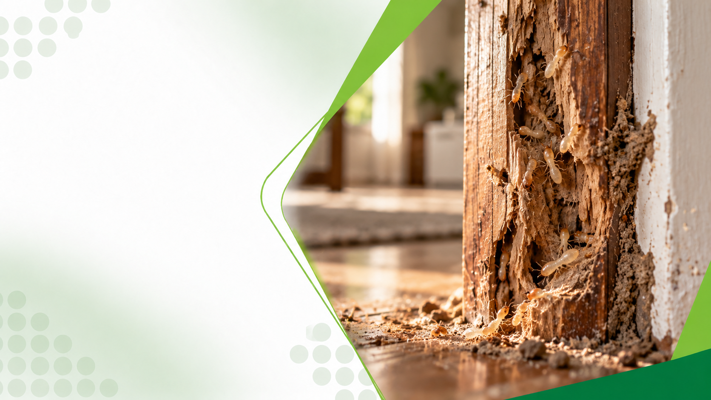

Descupinização em Franca, SP
Controle de cupins para residências, comércios e empresas em Franca e região.
Descupinização em FrancaDescupinização Profissional
Proteja móveis, forros, portas, esquadrias e estruturas de edificações contra o ataque destrutivo de cupins de madeira seca e cupins de solo.
A Bioforte avalia os pontos de infestação e aplica o tratamento adequado para preservar o patrimônio de cada cliente.

Entenda o serviço
Descupinização é o conjunto de técnicas para controlar infestações de cupins de madeira seca e cupins de solo (subterrâneos) em edificações, móveis e estruturas.
Cupins se alimentam de celulose e podem comprometer a estrutura de madeira de forma silenciosa. Um serviço profissional identifica o tipo de cupim antes de definir o tratamento.
A partir do diagnóstico é definida a estratégia de controle mais adequada para o imóvel.
Como trabalhamos
Cada infestação possui características próprias. O tratamento considera o tipo de cupim, o material afetado e as condições do imóvel.
A equipe vistoria móveis, forros, portas, esquadrias e estruturas de madeira em busca de sinais de atividade de cupins.
Cupim de madeira seca e cupim de solo possuem hábitos e tratamentos diferentes. Identificar corretamente define a técnica adequada.
O plano pode combinar tratamento localizado na madeira, barreira química no solo ou perímetro e medidas de correção de umidade e ventilação.
O cupinicida é aplicado por profissionais qualificados, em pontos definidos, com produtos registrados para uso profissional.
Após o atendimento, o cliente recebe orientações sobre cuidados, inspeção periódica e como evitar novas infestações.
Quando a área afetada é extensa ou o imóvel possui risco estrutural, a descupinização pode ser integrada a um programa de Controle Integrado de Pragas .
Espécies atendidas
A Bioforte atua no controle das principais espécies de cupins encontradas no ambiente urbano.

Vive dentro da madeira de móveis, rodapés, portas e esquadrias, formando galerias sem necessidade de contato com o solo.
Controle de cupim de madeira seca
Instala-se no solo e utiliza túneis para acessar estruturas de madeira, exigindo barreira química perimetral e proteção de fundações.
Controle de cupim de soloSinais de alerta
Alguns sinais indicam a presença de cupins e a necessidade de uma avaliação profissional.
Cupins agem de forma silenciosa e podem causar danos significativos antes de serem notados. Uma inspeção ajuda a identificar a origem do problema e a extensão do ataque.
Para sua casa
Em residências, cupins podem atacar móveis de valor, portas, rodapés, forros e estruturas de madeira.
O objetivo da descupinização residencial é eliminar a infestação e preservar o patrimônio, considerando as características do imóvel.
A equipe orienta os cuidados antes e depois do tratamento para a segurança de pessoas e animais.
Solicitar avaliação residencialPara o seu negócio
Ambientes empresariais e institucionais possuem estruturas e acervos que exigem cuidado especial.
Escolas, hospitais, comércios, indústrias, bibliotecas e edificações podem precisar de tratamentos localizados ou de barreira, além de inspeções preventivas para proteger estruturas e bens.
Antecipe o problema
Não é preciso esperar a madeira apresentar danos para adotar um controle de cupins.
O intervalo entre as inspeções deve ser definido conforme o imóvel, o histórico de ocorrência e o nível de risco.
Tranquilidade
A segurança depende da escolha do produto, do método, do local de aplicação e das orientações ao cliente.
A Bioforte utiliza cupinicidas registrados para uso profissional e realiza a aplicação em pontos definidos conforme o problema identificado.
Os cuidados necessários podem variar conforme o tratamento, o tipo de madeira e as características do ambiente.
Antes do serviço, a equipe informa orientações específicas sobre pessoas, crianças, animais domésticos e o tempo de reentrada quando aplicável.
Nossa autoridade
Controle de cupins não deve ser tratado apenas como aplicação de produto.
A Bioforte trabalha a partir da análise do imóvel e da identificação do tipo de cupim para definir a estratégia adequada para cada situação.
Atendimento regional
Controle de cupins para residências, comércios e empresas em Franca e região.
Descupinização em FrancaServiços profissionais de controle de cupins para clientes residenciais e empresariais em Ribeirão Preto e região.
Descupinização em Ribeirão PretoAtendimento especializado para imóveis residenciais, comerciais e empresariais em Uberaba e região.
Descupinização em UberabaSoluções em controle de cupins para residências, empresas e outros ambientes em Guarapuava e região.
Descupinização em GuarapuavaDúvidas frequentes
Sinais como serragem fina, túneis de terra, madeira que soa oca, asas perto de janelas e grânulos de fezes indicam atividade de cupins.
O cupim de madeira seca vive dentro da madeira sem contato com o solo. O cupim de solo se instala no chão e utiliza túneis para acessar as estruturas, exigindo tratamento de barreira.
Sim. Infestações não tratadas podem comprometer peças de madeira e estruturas ao longo do tempo. Quanto antes o controle, menor o dano.
Sim, quando realizado por profissionais com produtos registrados para uso profissional. A equipe orienta os cuidados específicos antes e depois do serviço.
Madeiras novas e materiais trazidos para reformas podem conter cupins. A inspeção preventiva ajuda a evitar que a infestação se espalhe.
A frequência depende do imóvel, do histórico e do nível de risco. Ambientes com histórico de infestação podem exigir inspeções programadas.
Sim. A Bioforte atende residências, condomínios, comércios e indústrias, inclusive com programas de Controle Integrado de Pragas.
Entre em contato com a Bioforte e informe sua cidade e os sinais observados. A equipe orienta os próximos passos e elabora uma proposta adequada.
Encontrou serragem, túneis, asas de cupim ou madeira danificada?
A Bioforte pode avaliar o imóvel e indicar a estratégia de controle adequada para proteger seus móveis e estruturas.
Solicitar orçamento gratuitoFranca • Ribeirão Preto • Uberaba • Guarapuava
Continue explorando

Prevenção e controle de insetos e aracnídeos urbanos, como baratas, formigas e aranhas.
Conhecer o serviço
Erradicação e prevenção de roedores, como camundongos, ratazanas e rato de telhado.
Conhecer o serviço
Ações preventivas e corretivas contínuas para impedir a proliferação de pragas.
Conhecer o serviço
Afastamento técnico de pombos com barreiras físicas e manejo sem crueldade.
Conhecer o serviço
Higienização periódica de reservatórios de água com emissão de laudo técnico.
Conhecer o serviço